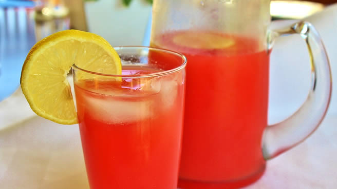

Pineapple Sunrise Mimosas:R75.00
serving size:
12
Per Serving:
.
About the meal
These simple, sweet mimosas are great for brunch. For a virgin version, substitute club soda or citrus-flavored sparkling water for the prosecco, and use grenadine instead of Campari.